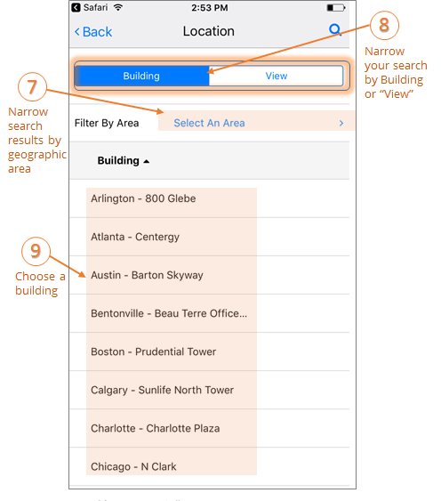
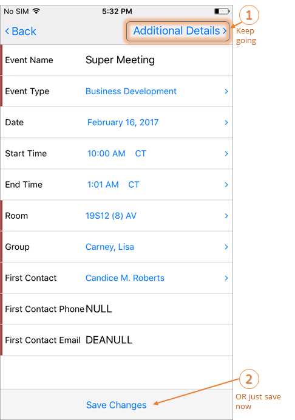

The
To create a booking in the
1. From the Calendar screen, tap the New Reservation (+) icon.
2. From the Select A Template screen, choose a booking template.
3. Enter the required information for your booking (Event Name, Event Type, Room, Group, and First Contact). Fields that appear here vary depending on your booking template.

a. Location = the geographic or physical location of the space, such as a country, region, district, etc.
b. Building = the building in which the space is located.
c. View = the custom grouping your Administrator may have defined to pool and classify types of space, such as Offices, Conference Rooms, Classrooms, or Campuses
d. Area = the area of a Building or View in which the space resides, such as floor, plaza, hall, or project.




See Also: (Video Tutorial) Booking a Desk or a Meeting